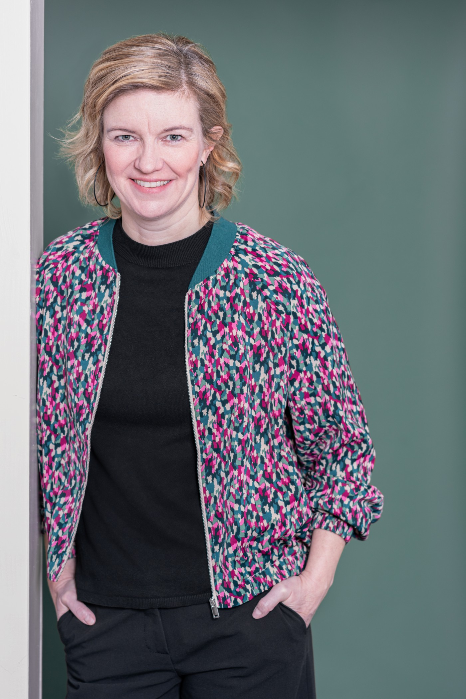

Eine neue Webseite entsteht
Neue Perspektiven.
Gemeinsam
weitergehen.
Systemische Beratung & Mediation
Manchmal braucht es einen neuen Blick auf das, was uns bewegt. Ich begleite Menschen in herausfordernden Situationen – mit Klarheit, Empathie und einem offenen Ohr.

Klar im Denken. Zugewandt im Gespräch.Nadine Holländer
Systemische BeratungMediationNeue PerspektivenIn Recklinghausen
Hier entsteht meine
neue Webseite.
Bald mehr.
Schön, dass Sie schon da sind. Hier erfahren Sie bald mehr über mich und meine Arbeit als systemische Beraterin und zertifizierte Mediatorin.
Sie haben bereits ein Anliegen? Ich freue mich, von Ihnen zu hören.